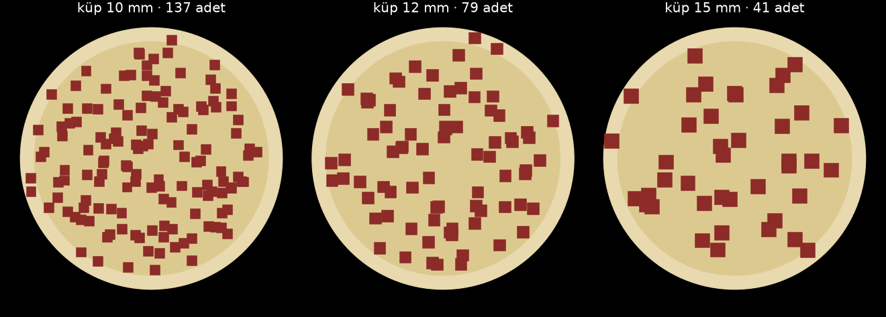

Kuşbaşı ne kaşar gibi hafif tane ne kıyma gibi macun: ıslak, yumuşak, iri tane. Bu yüzden hesabı tek sayı yönetiyor: küp kenarı d. Kasetin her ölçüsü d'nin katı olarak çıkıyor.
| kural | kaynak | gereken | kasette |
|---|---|---|---|
| Köprü kurmasın: düşey açıklık | BulkInside · tek boy tanede 4 ×, karışıkta 2–3 × | ≥ 4 d | boğaz = tekne Ø72 · ağız 48 × 44 |
| Topak sıkışmasın: mil ile tekne arası | CEMA 350 / KWS · R = 1,75 · 2,5 · 4,5 | ≥ R · d | 28 mm · konik kökte 22 mm |
| Küp iki kanat arasına sığsın | geometri | net boşluk ≥ 3 d | hatve 40 → 50,5, kanat 4 mm → 36 mm · çift ağız OLMAZ |
| İki hareketli yüzey arası küp ezmesin | geometri: ya giremesin ya rahat geçsin | < d/3 ya da > 1,5 d | lama–duvar 2,4 · rotor–kanat 18 |
CEMA'nın “hepsi topak” sınıfı (R = 4,5) 10 mm küpte bile 45 mm boşluk ister; 140'lık gövdeye sığmaz. O kural kömür, taş gibi sert topak için. Et yumuşak, ezilerek geçer; biz sınıf 2'yi (2,5) tutturduk. Sıkışma olursa ilk bakılacak yer burası.
| küp | bir küp | pide başına | boğaz | R (mil–tekne) | hatve | ağız | rotor |
|---|---|---|---|---|---|---|---|
| 8 mm | 0,54 g | 267 | ✓ | 3,50 ✓ | ✓ | ✓ | ✓ |
| 10 mm | 1,06 g | 137 | ✓ | 2,80 ✓ | ✓ | ✓ | ✓ |
| 12 mm | 1,83 g | 79 | ✓ | 2,33 ✓ | ✓ | ✗ | ✓ |
| 15 mm | 3,58 g | 41 | ✓ | 1,87 ✓ | ✗ | ✗ | ✗ |
| 20 mm | 8,48 g | 17 | ✗ | 1,40 ✗ | ✗ | ✗ | ✗ |
Kaşardaki aynı formül. Arkada konik kök, öne doğru açılan hatve: kapasite akış yönünde sürekli artıyor, et hiçbir yerde sıkışmıyor ve hazne yalnız arkadan değil boyunca çekiliyor.
| yer (arka → ön) | hatve | mil | Vt mL/tur | verim | taşınan mL/tur |
|---|---|---|---|---|---|
| %0 | 40,0 | Ø28,0 | 124,4 | 0,86 | 106,8 |
| %10 | 41,0 | Ø21,6 | 137,3 | 0,85 | 116,1 |
| %19 | 42,0 | Ø16,0 | 146,9 | 0,83 | 122,7 |
| %40 | 44,2 | Ø16,0 | 155,6 | 0,82 | 128,1 |
| %70 | 47,3 | Ø16,0 | 167,7 | 0,81 | 135,4 |
| %100 | 50,5 | Ø16,0 | 179,9 | 0,79 | 142,2 |
Sürtünmeye duyarlılık (ön uç, mL/tur): φ 15° → 146,7 · φ 19° → 142,5 · φ 25° → 135,8 · φ 30° → 129,7 · φ 40° → 115,4. Sürtünme iki katına çıksa kapasite %20 düşüyor — sonuç sürtünme varsayımına çok bağlı değil.
| doluluk VARSAYIM | tur başına | 145 g | 10 sn'de | kanat ucu hızı | ± %5 doz |
|---|---|---|---|---|---|
| 0,45 | 51,2 g | 2,83 tur | 17,0 dev/dk | 0,061 m/s | ± 51° |
| 0,60 | 68,2 g | 2,12 tur | 12,7 dev/dk | 0,045 m/s | ± 38° |
| 0,75 | 85,3 g | 1,70 tur | 10,2 dev/dk | 0,036 m/s | ± 31° |
Vida büyük olduğu için doz ≈ 2 turda çıkıyor. Kaşardaki gibi olsaydı bu “pide başına 2 öbek” demekti. Onu şu çözüyor:
Vida hacim ölçer, küp saymaz. Dozun başında ve sonunda kesme düzlemine denk gelen küpler “içeride mi dışarıda mı” belirsiz. Bu, hiçbir ayarla giderilemeyen alt sınır; doluluk oynarsa üstüne biner.
| küp | kesme düzleminde | belirsizlik | dozda | tek küp |
|---|---|---|---|---|
| 8 mm | 27,4 | ± 2,14 küp | ± %0,8 | %0,4 |
| 10 mm | 17,5 | ± 1,71 küp | ± %1,2 | %0,7 |
| 12 mm | 12,2 | ± 1,42 küp | ± %1,8 | %1,3 |
| 15 mm | 7,8 | ± 1,14 küp | ± %2,8 | %2,5 |
| 20 mm | 4,4 | ± 0,85 küp | ± %5,0 | %5,8 |
Tabla 35 dev/dk dönerken dıştan içe yürüyor, küpler sürekli düşüyor. 25 mm'lik hücrelerde küp sayıldı (8 deneme ortalaması). “Rastgele serpmenin sınırı” = bu kadar az küple elde edilebilecek en iyi düzgünlük.

| küp | adet | hücre başına | sapma | rastgele serpmenin sınırı | boş hücre |
|---|---|---|---|---|---|
| 8 mm | 267 | 3,6 | %51 | %53 | %2,3 |
| 10 mm | 137 | 1,9 | %63 | %73 | %10,5 |
| 12 mm | 79 | 1,1 | %88 | %96 | %30,3 |
| 15 mm | 41 | 0,5 | %124 | %136 | %55,1 |
| 20 mm | 17 | 0,2 | %196 | %208 | %78,3 |
Sapma her boyda rastgele serpmenin sınırında: makine elinden geleni yapıyor, boşluğu belirleyen küp sayısı. 10 mm'de hücrelerin %10'u boş, 15 mm'de yarısından fazlası. Düzgün görünen pide için de küçük küp gerekiyor.
Çalışma torku ≈ 0,25 N·m (yatak 0,94 kg + hazne basıncı, sürtünme 13,5 N). Redüktör 24 N·m veriyor; tehlike çalışma değil sıkışma. Sürücüde akım sınırı ≈ 3 N·m olmalı ki sinir parçası sıkışırsa baskı kanat kırılmasın, motor dursun.
Doluluk (0,60) varsayım. Islak küplerin kanalı ne kadar doldurduğu ancak tartıyla bulunur. Eşiğin üstünden tıkaç akışı hesapta tutarlı ama denenmedi: et yapışkansa eşikte birikebilir — o zaman eşik 6'dan 3'e iner. Gerçek parçacık simülasyonu yok; 7. bölüm bir serpme modeli, küplerin birbirine yapışmasını bilmez. Sinir ve zar parçaları modelde yok; sıkışmanın asıl sebebi onlar olur.
1) 20 küpü cetvelle ölç → d. 2) 1 litrelik kabı doldur, tart → dökme yoğunluk. 3) Helezonu elle 5 tur çevir, çıkanı tart → g/tur ve doluluk. Bu üç sayıyla bütün sayfa yeniden hesaplanır.